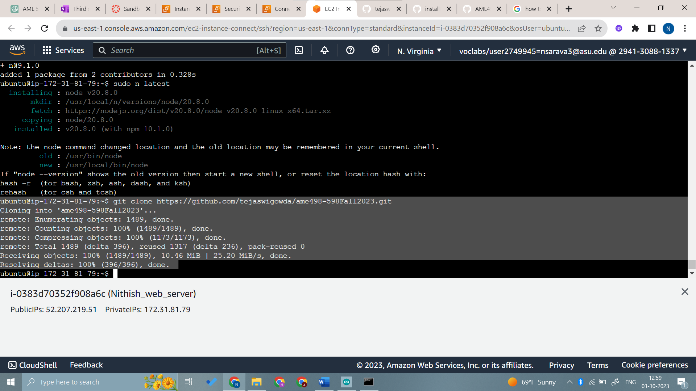

Step by step guide
Step 1: Connect to a wifi network with internet access
Step 2: Start lab
Step 3: Select EC2
Step 4: Launch instance and create a server
Step 5: Add server name
Step 6: Select Ubuntu 20.04
Step 7: Select RSA key pair
Step 8: Enter the storage size
Step 9: Click launch instance to initiate

Step 10: Window after successful initiation of instance
Step 11: Select the required instance and click connect
Step 12: Initial window of the instance
Step 13: Select the instance and click on the security tab
Step 14: Click on launch-wizard-1 in inbound rules
Step 15: Click on inbound rules tab
Step 16: Click on Edit inbound rules
Step 17: Add the required ports and source
Step 18: Install NodeJS and MongoDB
Step 19: Update Node version
Step 20: Clone class git repository
Step 21: Open the Arduino code and select the appropriate board and port in Tools menu
Step 22: Update the ssid, password, serverName and upload the code to ESP32
Step 23: Enable and start the mongoDB service
sudo systemctl enable mongod
sudo systemctl start mongod